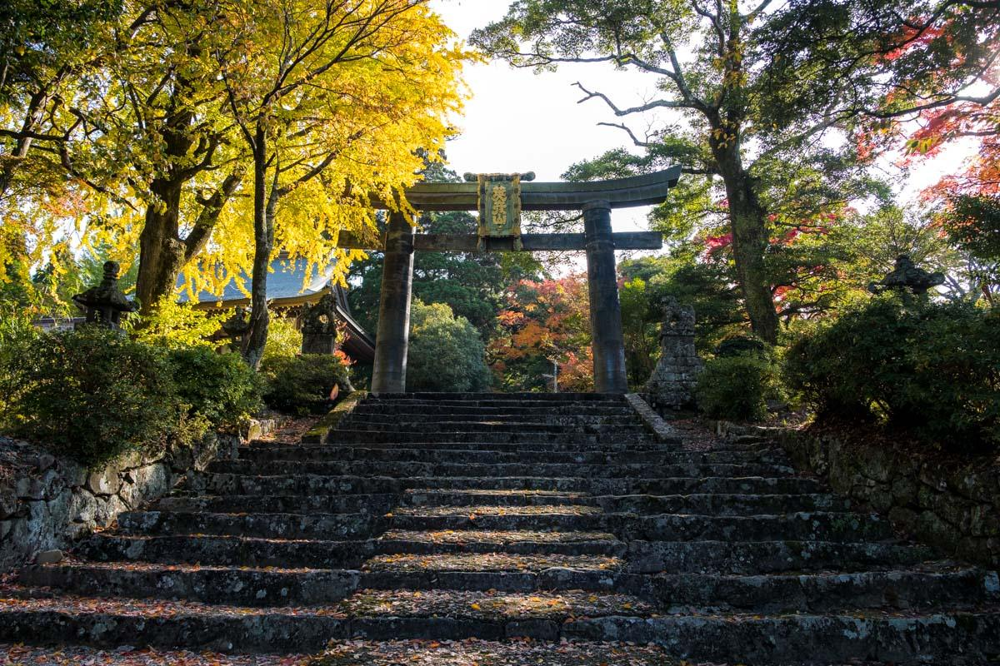
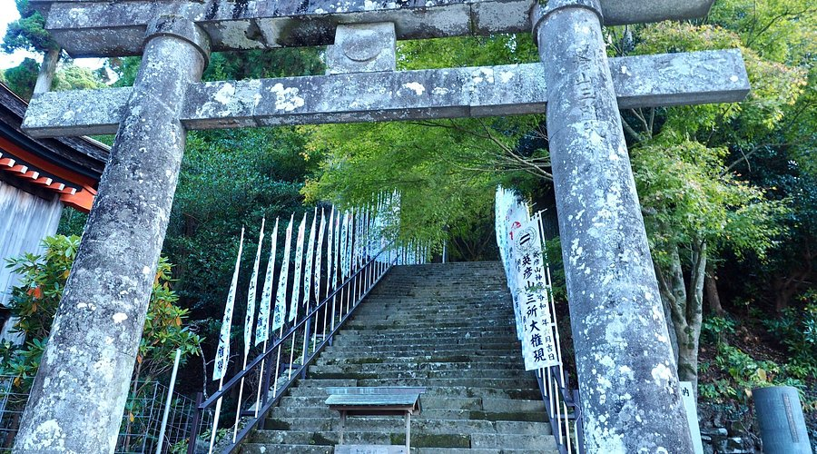
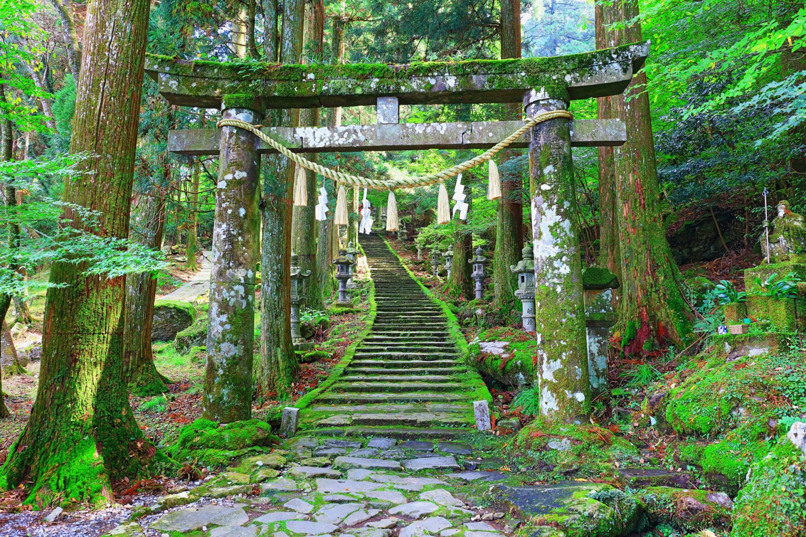

Sacred Mountain of Shinto Spirituality
Mt. Hiko is a mountain with historical significance in Japanese culture and established hiking trails. The area has ancient forests and relatively undisturbed natural surroundings. There's a shrine at the summit with documented historical importance. Hiking routes are marked and accessible at different difficulty levels. The base has hot springs infrastructure. The location is reasonably accessible from major cities for a day trip or longer visit. The mountain atmosphere is quieter and more removed from urban density than most other hiking destinations. If you're interested in mountain environments, Japanese cultural sites, forest hiking, or simply spending time in a natural setting that's relatively preserved, Mt. Hiko provides straightforward access to those experiences.


